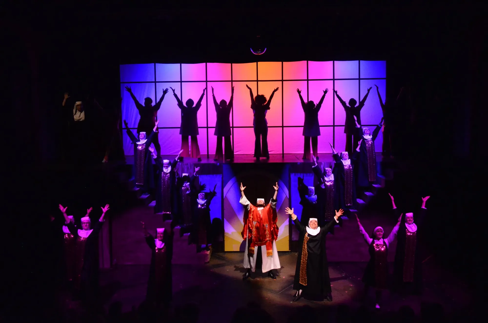
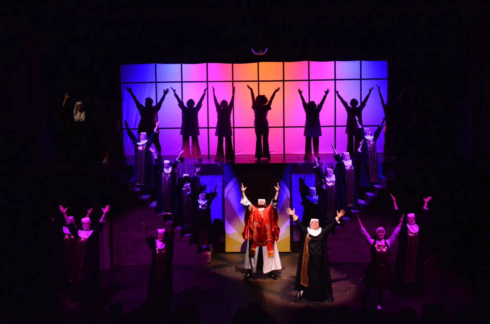
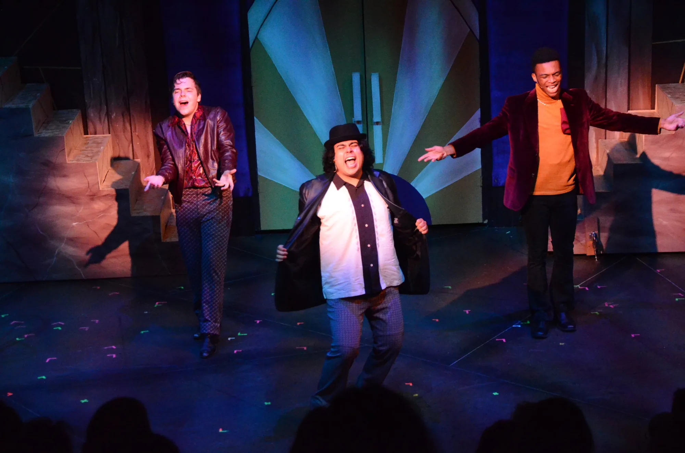
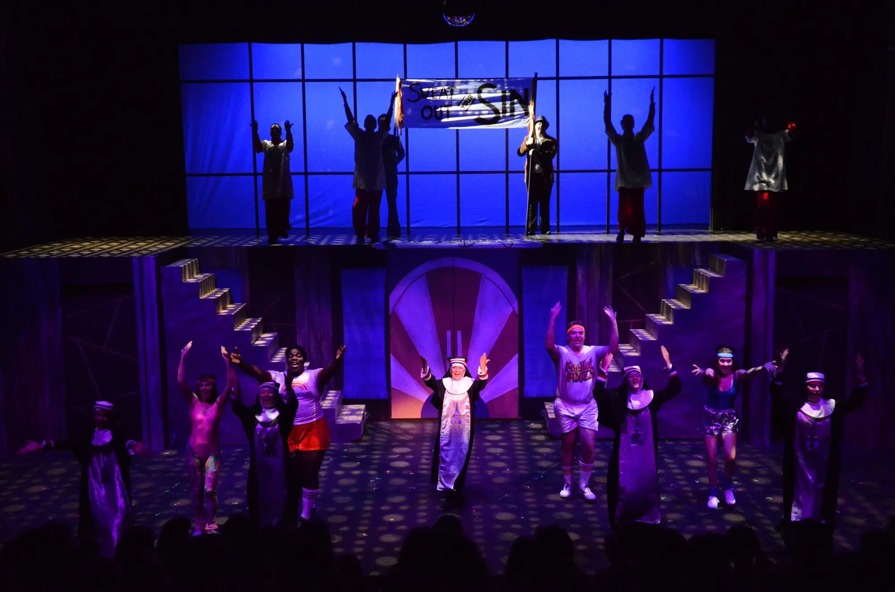
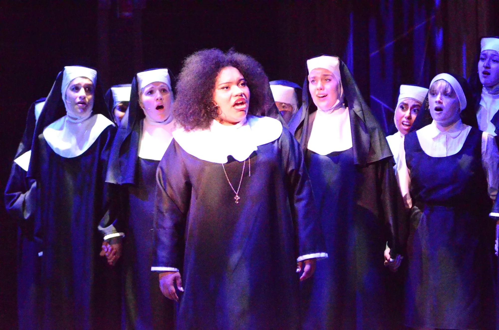
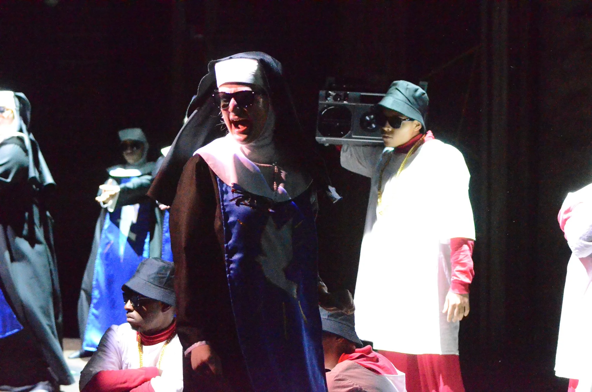
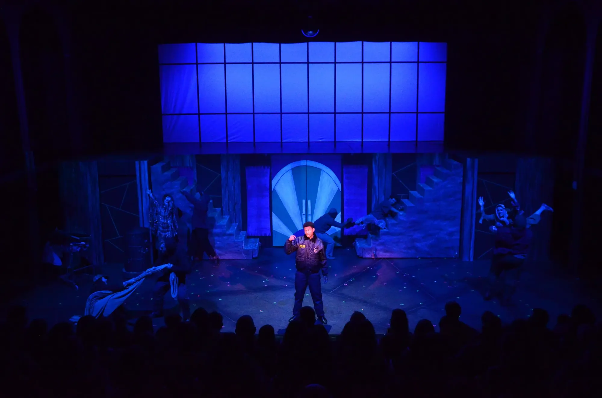

★ Production 05
Sister Act








★ The Company ★
Sister Act
Music by Alan Menken / Lyrics by Glen Slater / Book by Cheri and Bill Steinkellner, additional material by Douglas Carter Beane
- Producer
- Summer Stock Austin
- Choreography
- Coy Branscum
- Music Direction
- Corie Melaugh
- Scenic
- Ia Enstera
- Lighting
- Scott Vandenberg
- Costumes
- Teresa Carson
- Sound
- Chris Braudt
- Props
- Theada Haining
- Stage Management
- Olivia Fletch
- Dance Captain
- Morgan Prentiss